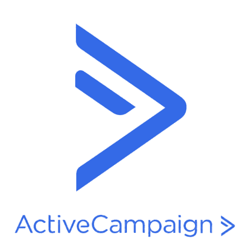

Revenue operations · Multi-platform automation
A sales system that protects momentum after the close.
I connected lead capture, CRM deals, contracts, payment tracking, follow-up campaigns, and onboarding into one continuous flow.
Explore the system ↓6revenue milestones
60.8%campaign open rate
31.1%campaign click rate
Built with
 Monday.com
Monday.com
 Zapier
Zapier
 ActiveCampaign
ActiveCampaign
 SignNow
SignNow
 Stripe
Stripe
 Sheets
Sheets
SignNowStripe01 / System map
One record follows the client from lead to paid.
Offer details, contract status, payment status, and CRM stage stay connected instead of being re-entered.
SALES INPUT
Lead + offerPlan, term, fee, owner
→
CRM CONTROL

Contact, deal, stage, and campaign stateLIVE→
REVENUE OUTPUT
Generate contractTrack signatureTrack paymentStart onboarding
SignNowContractsStripeCard + ACH02 / Production flow
The sales handoff runs as one sequence.
Each completed milestone updates the systems that depend on it.
→ Sales keeps moving while the system protects every contract, payment, and follow-up milestone.
03 / Logic layer
The backend chooses the right action for every status.
Contract type, plan, fee, payment method, and CRM state determine the route.
04 / Operational impact
Fewer handoff gaps between sold and onboarded.
The client journey stays visible without sales manually synchronizing four platforms.
BEFORERepeated data entryContracts chased manuallyPayment status checked separatelyCRM stages fall behind
→Milestone-driven automationEvery completed event updates the next system
AFTERRecords stay alignedContracts move fasterPayments stay visibleFollow-up stays relevant
THE OPERATIONAL VALUESales can focus on closing while the system protects momentum through contract, payment, and onboarding.
Need a revenue workflow?
Start a project ↗Let's connect the handoffs your sales team should not manage manually.
Next systemPenot CRM + pipeline automation
→